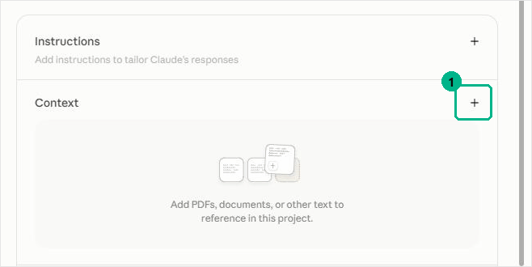

Step 05 of 08 · Once
Set up
The first thing you run. You never answer the same question twice.
Chapter setup · once
Nine questions
One at a time, each with a default. Reply "default" to accept. The last is optional.
- Which city?Becomes your chapter name, Climate Tech [City].
- Your name?Goes on every issue as the sender. Email from a person gets opened.
- Which day to send?Pick one and never move it.
- How often?Weekly is the standard and the default. Every two weeks is offered only after your first harvests show the volume.
- Which events count as local?The sentence every harvest uses to decide what belongs. It is the only instruction it gets.
- Which web address?Chapters use two patterns and there is no published rule. Recorded, and flagged to confirm with the CTC team.
- How to close each issue?Default: [your first name] and the Climate Tech [City] team.
- Timezone?It offers the obvious one. You confirm.
- Anything unusual about your city?A second cluster, a university that owns the calendar, a season when everything stops. Skippable.
Two documents come back
What you get back
The settings file is what every other skill reads. The plan is what you read. Fictional Denver chapter.
Add the settings file to your project as a context file. Open your project. In the Context panel on the right, the plus sign, then the file. Not a chat attachment: those vanish with the conversation. Nothing else works until it is there.
